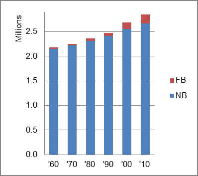

The foreign-born (FB) population increased from 33,268 in 1960 to 186,942 in 2010. That was an increase of 461.9 percent. The foreign-born share changed from 1.5 percent to 6.6 percent.
The share of the overall population that was native-born (NB) increased by 24.3 percent.
Kansas: Population 1960-2010 
The first chart below shows the three population change factors for three periods adjusted for annual average amounts. Natural change (B-D) was the primary factor in population increase in all three periods while NDM was a consistent negative factor.
The second chart shows the same data but with an adjustment to reflect births to immigrants shifted to NIM. In it, the relative roles of B-D and NIM in adding population remained unchanged.
Kansas: Sources of Population Change 1990-2013 Kansas: Sources of Population Change (Adjusted) 1990-2013
B-D NDM NIM B-D NDM NIM 90-'99 82.4% neg. 17.6% 90-'99 69.7% neg. 30.3% 00-'09 73.4% neg. 26.6% 00-'09 56.8% neg. 44.4% 10-'13 75.3% neg. 24.7% 10-'13 56.1% neg. 43.9%